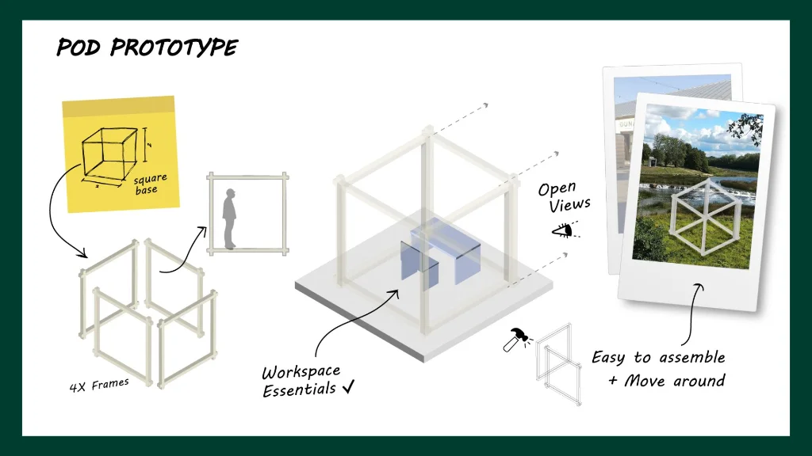
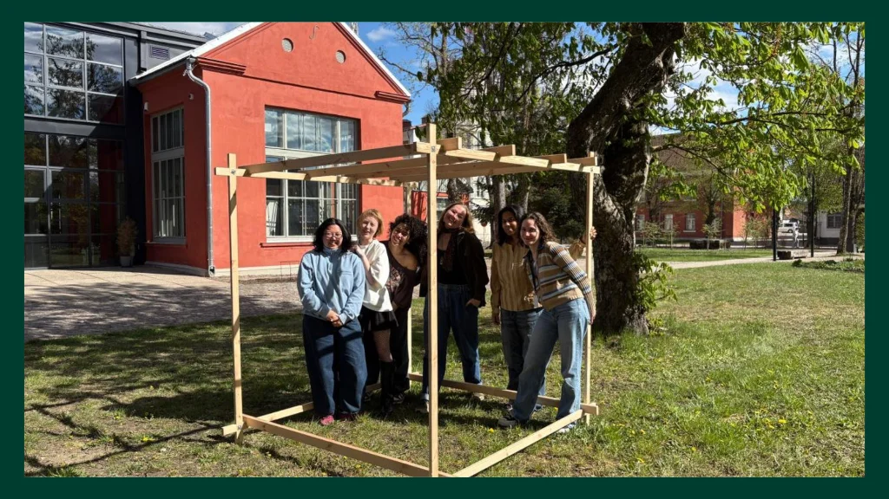
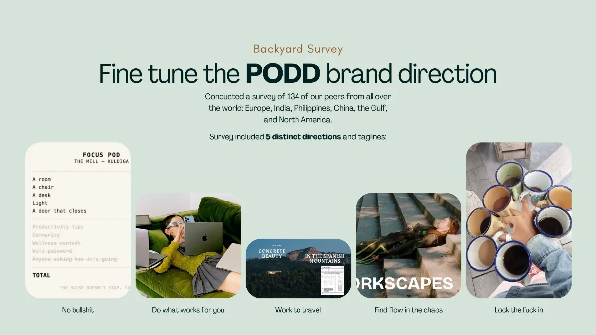
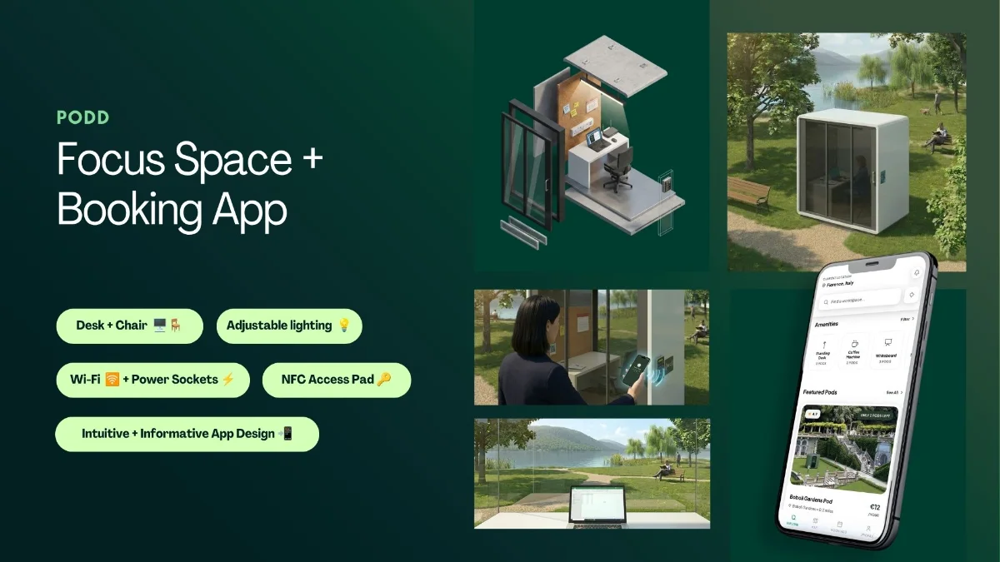
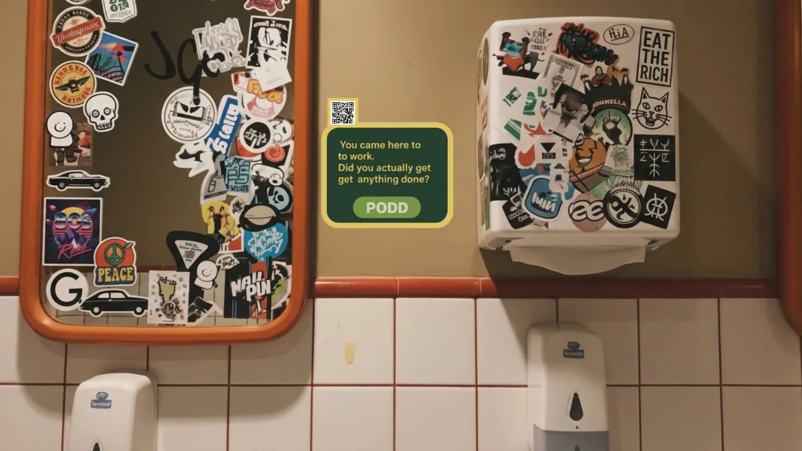
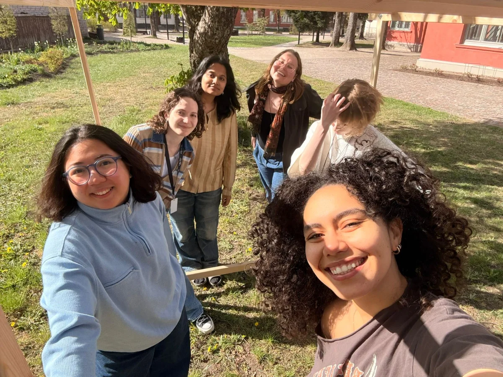

PODD
A network of private, bookable focus pods for remote workers — 2nd place at the Innovation Lab final pitch

330 million people now work remotely, but none of their usual options hold up: home is isolating, cafés are unreliable, and coworking spaces have gotten expensive as ~80% of their space shifted to private offices. We set out to design a focus space that's none of those things.
As part of my Innovation Lab team, I helped design and pressure-test PODD: a network of private, fully-equipped focus pods dropped into inspiring outdoor spots and booked instantly through an app. We validated placement, pricing and pod design through two rounds of digital and physical prototyping before pitching the full business case.
testing
What actually makes a pod feel right?
We ran two digital prototypes, a small city (Kuldīga, 28 participants) and a big city (Florence, 51 participants), to test location logic and amenities, then built cardboard and wood-frame physical prototypes to test the pod itself. 79 people in total shaped what shipped.
Location decides before price does
Users ruled pods out on "does this feel right?" before ever opening the amenities list. Location was the emotional filter, price justified the choice, and amenities were only ever a tiebreaker.
Two distinct location cravings
In busy transit hubs, people wanted to withdraw from their surroundings: get in, focus, get out. In nature spots, they wanted the opposite, with the view as part of the work. In-between locations landed flat.
Privacy and Wi-Fi had to be provable
The cardboard and wood-frame prototypes surfaced two top blockers: feeling "perceived" from outside, and missing connectivity info. Both were fixed with clear specs shown upfront in the app, not discovered on arrival.


brand direction
"Work to travel" beat three other directions
To find PODD's voice, we surveyed 134 peers across Europe, Asia and North America against four taglines and brand territories. "Work to Travel" won at 58%, framing PODD as a supplement to the destination rather than an escape from it — lush, minimal, imagery-led.
of 134 surveyed chose "Work where the world inspires you" over "Lock the F in," "No bullshit," and "Find flow in the chaos."

solution
A focus pod network, booked like a rideshare
PODD pairs a fully-equipped physical pod with a booking app, priced to flex from a single hour to daily use.
Focus Space
Desk, chair, adjustable lighting, Wi-Fi, power sockets and NFC access — a modular, insulated pod under 25m², buildable on screw piles for reversible, low-permit installation.
Addresses · privacy + comfortBooking App
An interactive map of every pod, upfront specs (Wi-Fi, security, session rules) to remove pre-arrival doubt, and one-tap booking by the hour or bundle.
Addresses · discovery + trustFlexible Pricing
Pay-as-you-go from €5.63/hr, plus 8/16/30-hour bundles at up to 35% off — with credits planned to work across every city PODD launches in.
Addresses · frequency + loyalty
marketing
How do we catch people's attention?
Not with workspace ads. PODD sells reclaimed time — disruptive physical ads in cafés and transit hubs asking one question: "Need 60 minutes of real focus?" Every touchpoint funnels to a waitlist, and the first 50 sign-ups get their first session free.
Hard-to-miss physical ads in the right place at the right time, plus a visible pod installation people can walk past before they can book. All of it feeds the waitlist.
A launch event where first sign-ups and productivity influencers try the pods, and a hero video of the Ventas pod and its view. Press story and social proof in one.
Geo-targeted paid social in Tallinn, Riga, Vilnius and Krakow, waitlist re-targeting, a productivity newsletter, and a launch event in every new city.

operations & financial planning
Not every spot is a PODD spot
We scored candidate locations against observable signals rather than gut feel: one rubric for everyday pods, another for nature pods. Ventas Rumba passed all three nature checks and became the pilot site.
Everyday pods
Target population within a 10-minute walk (universities, office clusters, dense housing) · small or shared flats that push people out to focus · foot traffic visibly walked on weekday mornings.
Nature pods
The location already attracts visitors (tourism data, "things to do" lists) · the visitor type matches our customer (Instagram geotags skew creatives and solo travelers, not family tours) · a calm, grounding setting.
Does the math survive contact with reality?
Each pod costs ~€17,500 installed, financed 20% down and 80% over 48 months, so PODD never owns the asset outright. At a €10/hr blended rate and just 26% utilization (6 hours a day), a pod earns €1,800 a month, covers €390 of OPEX plus its repayment, and pays itself off in 16 months.
PODD neither builds pods nor owns land — manufacturers finance the hardware, landowners take fixed rent (or revenue share on nature sites), and PODD builds the network that connects it all.
outcome
place at the Innovation Lab final pitch
people tested across 2 digital + physical prototypes
projected net margin per pod once installation is repaid
